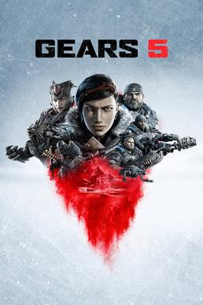
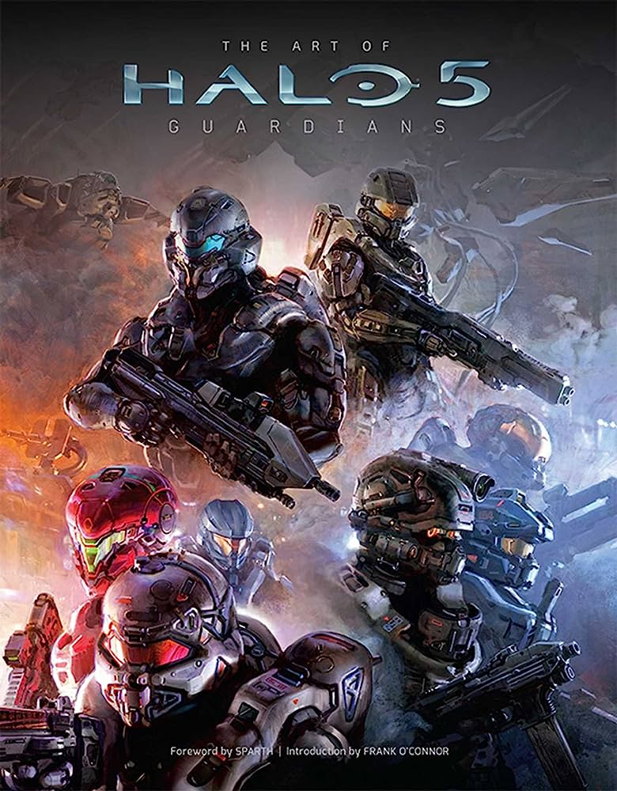
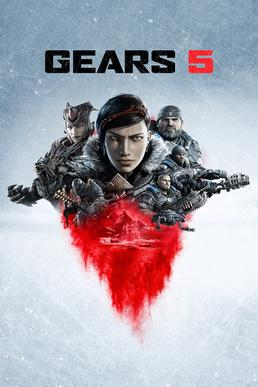
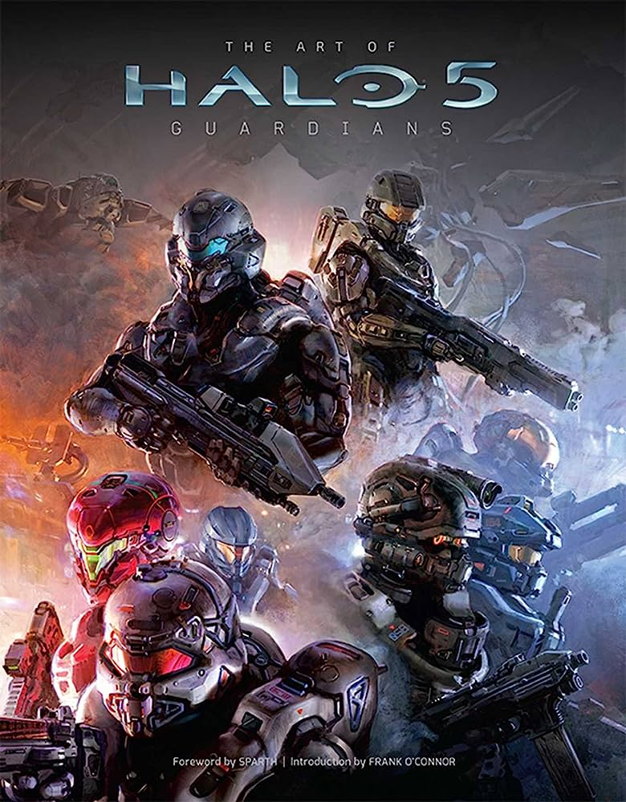

O primeiro Xbox chegou em 2001 para competir com o PSOne , que já estava no mercado desde 1995, e o recém chegado PlayStation 2, lançado no ano 2000. Além da Sony, a Microsoft também estava de olho no mercado conquistado pela Nintendo e seu Gamecube.
Três anos mais tarde, o próprio Bill Gates apresentou o console ao mundo ao lado de ninguém menos que o ator
Dwayne Johnson, o “The Rock” . O primeiro Xbox vendeu mais de 1 milhão de aparelhos nas primeiras três
semanas após
o lançamento.
Muitos desenvolvedores na época concordavam que o Xbox era mais poderoso que os concorrentes GameCube e PS2,
mas
poucos estúdios fora da Microsoft se aventuraram em explorar o real potencial do aparelho.
Em seu tempo de vida, o primeiro Xbox vendeu mais de 24 milhões de unidades no mundo. O resultado fortaleceu
a
marca, aos olhos do consumidor, e colocou o videogame em segundo lugar naquela geração, superando a Nintendo
e seu
GameCube (que vendeu 21,7 milhões consoles) e também do Sega Dreamcast (que vendeu apenas 9,1 milhões).
O Xbox foi o primeiro console a dar suporte a uma porta Ethernet de banda larga, o que abriu caminho para a
estreia (em 2002) da Xbox Live, um serviço de assinatura para acessar jogos online entre outros recursos. A
Xbox
Live ganhou popularidade com Halo 2 e atingiu o auge, naquela geração, com cerca de 20 milhões de usuários
Atualmente a Xbox conta com os seus maiores consoles, sendo eles:


 


